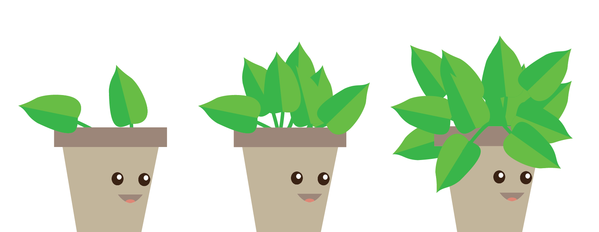
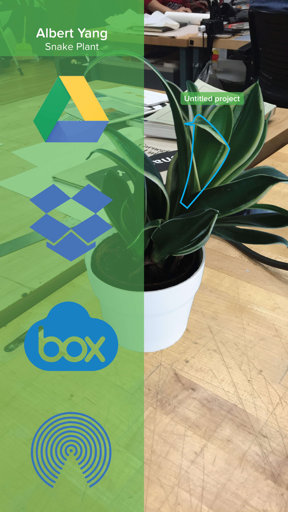
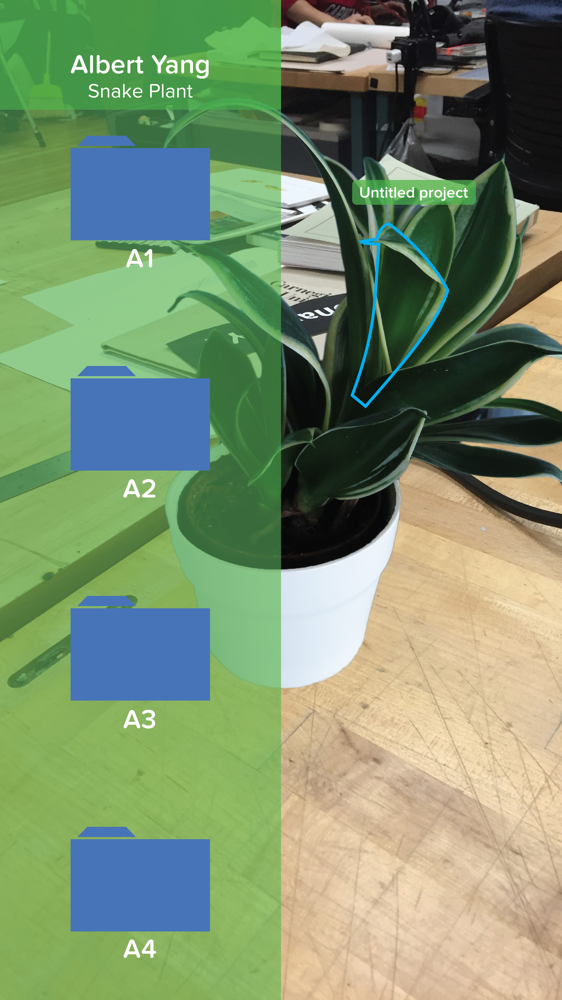
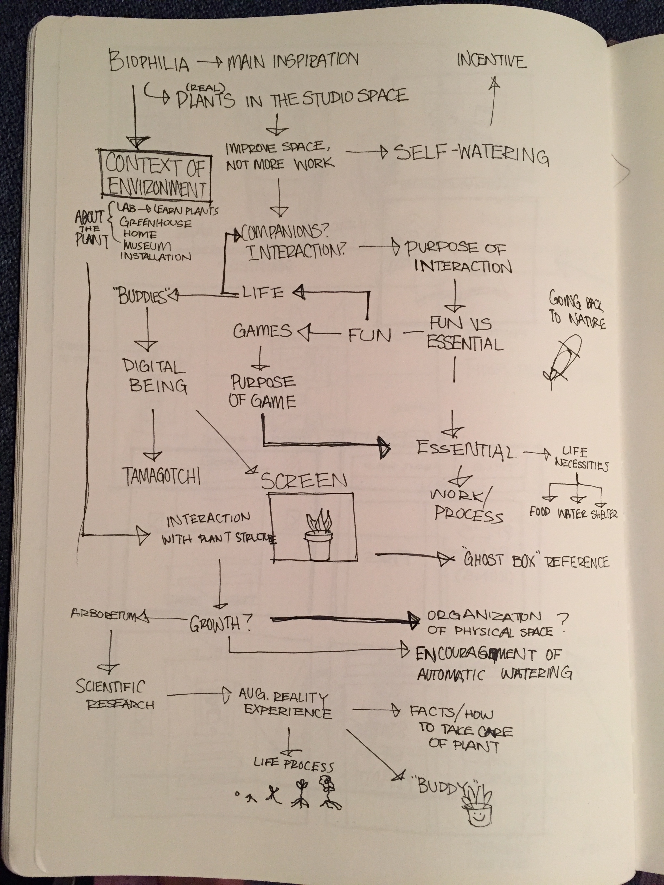

Given the prompt of creating a studio space for the future, I aimed to look back on what makes my current studio enjoyable and not enjoyable. I wanted to focus on improving the stressful, tired atmosphere by exploring the biophilia phenomenon, which says that having natural plants in an space can reduce stress and improve productivity.
My initial ideas involved utilizing augmented reality to interact with plants and have the users "upload" work or process documents into the plant. I wanted to explore the idea of having plants be a visual metaphor for one's work, having it grow over time as the user accumulates more process documents and number of projects.


Ultimately, however, this idea led to a dead end, as it was difficult to convince users to put in extra effort of using their phones to upload digital work into a physical object. In essence, it was just too much hassle for a normally simple task.
From there, I ran into a wall of figuring out how to move this project in a different direction that could still help improve the atmosphere of studio and not be just extra work for the studio inhabitants.

One of my main goals was to make the experience of having plants in the studio space a fun one, so I moved to giving people's personal table plants a life of their own. By creating a corresponding digital assistant to each table plant, the students could interact with their plants and be reminded to take care of them on a daily basis.